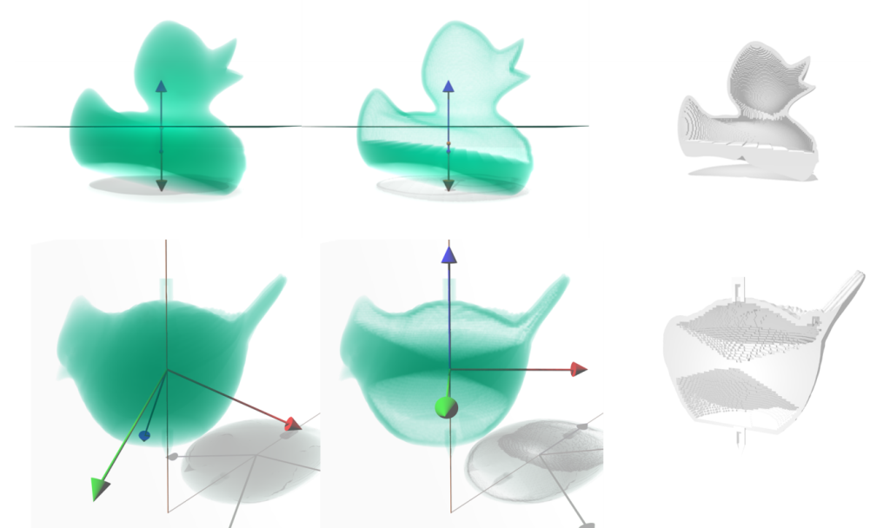
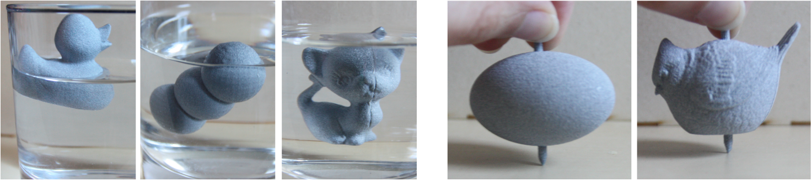

Shape Interior Modeling and Mass Property Optimization Using Ray-reps
Computers & Graphics (Proc. of Shape Modeling International, SMI), 2016
| Jun Wu | Lou Kramer | Rüdiger Westermann |
| now at TU Delft | TU Munich | TU Munich |

Abstract
We present a novel method for the modeling and optimization of the material distribution inside 3D shapes, such that their 3D printed replicas satisfy prescribed constraints regarding mass properties. In particular, we introduce an extension of ray-representation to shape interior modeling, and prove this parametrization covers the optimal interior regarding static and rotational stability criteria. This compact formulation thoroughly reduces the number of design variables compared to the general volumetric element-wise formulation. We demonstrate the effectiveness of our reduced formulation for optimizing shapes that stably float in liquids or spin around a prescribed axis.3D Prints
Download
 |
Paper 6.8 MB |
Bibtex
@article{WU2016SMI,
author = "Jun Wu and Lou Kramer and R\"udiger Westermann",
title = "Shape interior modeling and mass property optimization using ray-reps",
journal = "Computers \& Graphics",
volume = "58",
pages = "66 - 72",
year = "2016",
note = "Shape Modeling International 2016",
issn = "0097-8493",
doi = "http://dx.doi.org/10.1016/j.cag.2016.05.003",
}